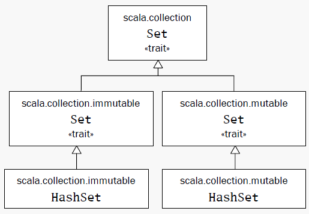
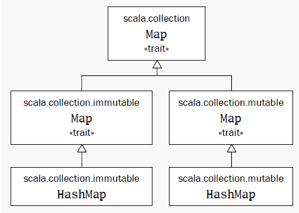

在默认字符编码为UTF-8的Linux下没问题。
Mac OS X系统的默认字符编码早就改成了UTF-8但它bundle的Java默认字符编码却一直是MacRoman。在启动REPL时传入参数-Dfile.encoding=UTF-8
用vim、emacs或者你习惯的文本编辑器打开scala命令，比如：
$ vim `which scala`
找到如下行：
[ -n "$JAVA_OPTS" ] || JAVA_OPTS="-Xmx256M -Xms32M"
把-D参数加到JAVA_OPTS里即可。
到https://github.com/scala/scala-dist][相关工具上下载，复制tool-support/src/vim到.vim目录下。
使用进入REPL环境的方式：
--(morgan-laptop:pts/8)-(13-03-15 9:04:57)-(~/workspace/study/scala) \-(morgan:%) >>> scala Welcome to Scala version 2.9.2 (OpenJDK 64-Bit Server VM, Java 1.7.0_15). Type in expressions to have them evaluated. Type :help for more information. scala>
输入回车自动换行。
发现输错了，再按几个回车就退出了。
退出Scala Shell：:quit或:q
在REPL环境中只能一行一行读取，所以如果要换行的话，不能让一行在语法上看起来已经结束：
scala> if(x > 0) { 1
| } else if(x == 0) 0 else -1
res1: Int = 1
另一个方法是在REPL中输入:paste粘贴代码，按下Control + D。
脚本文件，可以接收一个参数并输出欢迎信息：
/* 可以接收一个参数 */
println("Hello, " + args(0) + "!")
调用脚本：scala命令、文件名、参数
--(morgan-laptop:pts/8)-(13-03-14 23:28:27)-(~/workspace/study/scala/tmp) \-(morgan:%) >>> scala helloarg.scala Jade Hello, Jade!
可以通过循环处理多个参数的：
args.foreach( arg => println(arg) )
调用：
--(morgan-laptop:pts/8)-(13-03-14 23:49:39)-(~/workspace/study/scala/tmp) \-(morgan:%) >>> scala pa.scala Scala is even more fun Scala is even more fun
先看一个工具类，它根据字符串来计算出检验和：
import scala.collection.mutable.Map
class ChecksumAccumulator {
private var sum = 0
def add(b: Byte) { sum += b }
def checksum(): Int = ~(sum &0xFF) + 1
}
object ChecksumAccumulator {
private val cache = Map[String, Int]()
def calculate(s: String): Int =
if( cache.contains(s) ) {
cache(s)
} else {
val acc = new ChecksumAccumulator
for (c <- s)
acc.add(c.toByte)
val cs = acc.checksum()
cache += (s -> cs)
cs
}
}
然后是主程序。独立运行的程序一定要有main方法（仅有一个参数Array[String]而且结果类型为Unit）的单例对象。
import ChecksumAccumulator.calculate
object Summer {
def main(args: Array[String]) {
for (arg <- args)
println(arg + " -> " + calculate(arg))
}
}
编译Scala程序：
--(morgan-laptop:pts/8)-(13-03-15 0:28:39)-(~/workspace/study/scala/tmp) \-(morgan:%) >>> scalac ChecksumAccumulator.scala Summer.scala
有一个fast Scala compiler的后台进程可以在第一次被调用后一直跑在后台，节省一下每次编译的速度：
--(morgan-laptop:pts/8)-(13-03-15 0:29:11)-(~/workspace/study/scala/tmp) \-(morgan:%) >>> fsc ChecksumAccumulator.scala Summer.scala
可以关掉这个后台进程：
--(morgan-laptop:pts/8)-(13-03-15 0:29:11)-(~/workspace/study/scala/tmp) \-(morgan:%) >>> fsc -shutdown
编译完后可以看到生成的.class文件：
--(morgan-laptop:pts/8)-(13-03-15 0:44:31)-(~/workspace/study/scala/tmp) \-(morgan:%) >>> ls *.class ChecksumAccumulator$$anonfun$calculate$1.class ChecksumAccumulator$.class Summer.class ChecksumAccumulator.class Summer$$anonfun$main$1.class Summer$.class
运行编译出来的类文件：
--(morgan-laptop:pts/8)-(13-03-15 0:30:58)-(~/workspace/study/scala/tmp) \-(morgan:%) >>> scala Summer of love of -> -213 love -> -182
还有一个加入的Application特质的方式实现应用程序，但是有局限：不能访问命令行参数、只能在单线程下用。所以不推荐用它。
形式类似于：
object MyApp extends Application {
println("Hello")
}
脚本必须以表达式结束，而程序以定义结尾。尝试以scala解释器运行程序会报错。
val不可变变量；var可变变量。格式：
// 基本格式 val msg: java.lang.String = "Hello" // java.lang默认已经导入了 val msg: String = "Hello" // 自动推导类型 val msg = "Hello"
Scala语句以分号结束，而且分号可以省略。默认一行结束了就是一行语句结束了，除非以下三种情况，会认为语句还没有结束：
()和[]里，这里面不能放多条语句。
这是两个：
val s = "hello"; println(s)
if (x < 2)
println("too small")
else
println("ok")
这是两个：
x + y
一个：
(x + y)
一个：
x + y + z
取最大的函数，函数体的最后一行作为结果返回：
def max(x: Int, y: Int): Int = {
if (x > y) x else y
}
函数类型也能自动推导出来，可以省略。在递归函数的情况下，一定要明确地说明返回类型。如果函数体只有一行，那花括号也可以省略：
scala> def max(x: Int, y: Int) = if (x > y) x else y max: (x: Int, y: Int)Int
类型Unit对应Java中的void。即没有参数又没有返回结果的函数定义：
scala> def greet() = println("Hello")
greet: ()Unit
对于没有等号的方法来说返回类型一定是Unit。Scala可以把任何类型转为Unit，以下方法最后的String类结果会转为Unit并丢弃：
scala> def f(): Unit = "This String is lost!" f: ()Unit
有花括号但没有等号的方法默认为Unit，有了等号但没有类型会由编译器自动推导：
scala> def f() {"This String is lost!"}
f: ()Unit
scala> def f() = {"This String get returned!"}
f: ()java.lang.String
scala> f
res2: java.lang.String = This String get returned!
函数字面量用=>来分隔参数表与函数体：
(x:Int, y:Int) => x + y
通过函数字面量来迭代处理参数的例子：
args.foreach( (arg: String) => println(arg) ) //这里的String类型可以自动推导出来： args.foreach( arg => println(arg) ) //在这种字面量只有一行而且只有一个参数情况下，可以省掉参数列表 args.foreach( println )
scala> for (i <- 0 to 10) print(i) 012345678910
下面的语句产一个从0到5的集合：
scala> 0 to 5 res9: scala.collection.immutable.Range.Inclusive = Range(0, 1, 2, 3, 4, 5)
其实这个to是一个方法的调用。Scala中对于方法调用时，如果方法只有一个参数的话可以省略括号，原本的样子是：
(0).to(5)
scala中没有操作符的重载，因为操作符也是方法的名字：
1 + 2
相当于：
(1).+(2)
长度为3的数组，存放的元素类型为String：
val gs: Array[String] = new Array[String](3)
scala> val gs = new Array[String](3)
gs: Array[String] = Array(null, null, null)
scala> gs(0) = "aa"
scala> gs(1) = "bb"
scala> gs(2) = "cc"
scala> gs.foreach(print)
aabbcc
scala> val ns = Array("11","22","33")
ns: Array[java.lang.String] = Array(11, 22, 33)
scala> ns.foreach(print)
112233
对一个对象的后面加上括号的操作其实是调用了这个对象的apply方法。所以数组的元素索引操作其实是apply方法调用：
gs(0)
//相当于：
gs.apply(0)
val ns = Array("11","22","33")
//相当于：
val ns = Array.apply("11","22","33")
对带有括号并包括一到多个参数的变量赋值时，编译器使用对象的update方法对括号里的参数（索引值）和等号右边的对象执行调用：
gs(0) = "aa" //相当于： gs.update(0, "aa")
与java.util.List不同，scala.List是不可变的。不可变的对象更加符合函数式风格。
scala> val ll = List(1,2,3) ll: List[Int] = List(1, 2, 3)
::把一个元素加到列表的头上； 用:::连起两个列表：
scala> 0 :: ll res12: List[Int] = List(0, 1, 2, 3) scala> val ll2 = List(4,5,6) ll2: List[Int] = List(4, 5, 6) scala> ll ::: ll2 res11: List[Int] = List(1, 2, 3, 4, 5, 6)
一个元素也没有的空列表用Nil表示，作为一个空的列表，它可以把其他的元素给串起来：
scala> val nl = 1 :: 2 :: 3 :: Nil nl: List[Int] = List(1, 2, 3)
List只能把元素加在头上，如果要加在后面的话，一个方法是在加到头上以后再调用reverse方法；还有一个方案是使用ListBuffer，它有append方法。
所有以:结尾的方法其实是后一个操作数调用前一个操作数，所以：
0 :: ll // 其实是 ll.::(0) ll ::: ll2 // 其实是 ll2.:::(ll)
回到前面的串列表操作：
val nl = 1 :: 2 :: 3 :: Nil
如果没有最后的Nil，就变成了3.::(2)。因为数字没有::方法，这样就会报错。
List() 或 Nil // 空List
List("Cool", "tools", "rule") // 创建带有三个值"Cool"，"tools"和"rule"的新List[String]
val thrill = "Will"::"fill"::"until"::Nil // 创建带有三个值"Will"，"fill"和"until"的新List[String]
List("a", "b") ::: List("c", "d") // 叠加两个列表（返回带"a"，"b"，"c"和"d"的新List[String]）
thrill(2) // 返回在thrill列表上索引为2（基于0）的元素（返回"until"）
thrill.count(s => s.length == 4) // 计算长度为4的String元素个数（返回2）
thrill.drop(2) // 返回去掉前2个元素的thrill列表（返回List("until")）
thrill.dropRight(2) // 返回去掉后2个元素的thrill列表（返回List("Will")）
thrill.exists(s => s == "until") // 判断是否有值为"until"的字串元素在thrill里（返回true）
thrill.filter(s => s.length == 4) // 依次返回所有长度为4的元素组成的列表（返回List("Will", "fill")）
thrill.forall(s => s.endsWith("1")) // 辨别是否thrill列表里所有元素都以"l"结尾（返回true）
thrill.foreach(s => print(s)) // 对thrill列表每个字串执行print语句（"Willfilluntil"）
thrill.foreach(print) // 与前相同，不过更简洁（同上）
thrill.head // 返回thrill列表的第一个元素（返回"Will"）
thrill.init // 返回thrill列表除最后一个以外其他元素组成的列表（返回List("Will", "fill")）
thrill.isEmpty // 说明thrill列表是否为空（返回false）
thrill.last // 返回thrill列表的最后一个元素（返回"until"）
thrill.length // 返回thrill列表的元素数量（返回3）
thrill.map(s => s + "y") // 返回由thrill列表里每一个String元素都加了"y"构成的列表（返回List("Willy", "filly", "untily")）
thrill.mkString(", ") // 用列表的元素创建字串（返回"will, fill, until"）
thrill.remove(s => s.length == 4) // 返回去除了thrill列表中长度为4的元素后依次排列的元素列表（返回List("until")）
thrill.reverse // 返回含有thrill列表的逆序元素的列表（返回List("until", "fill", "Will")）
thrill.sort((s, t) => s.charAt(0).toLowerCase < t.charAt(0).toLowerCase)
// 返回包括thrill列表所有元素，并且第一个字符小写按照字母顺序排列的列表（返回List("fill", "until", "Will")）
thrill.tail // 返回除掉第一个元素的thrill列表（返回List("fill", "until")）
元组像列表，但可以放不同类型的元素。这样类似于Java Bean，但写起来更加简单。元组的类型按字段个数来识别，有2个字段的就是Tuple2、3个就是Tuple3，Scala最多支持到Tuple22：
scala> val pair = (99, "Luft") pair: (Int, java.lang.String) = (99,Luft)
访问字段通过_序号来实现。不能像数组一样用()的原因是：如果要用apply方法，那定义方法的时候就要声明返回类型，而同一个元组中元素的类型是不同的，所以写不出这个apply方法。
scala> print(pair._1) 99 scala> print(pair._2) Luft
对于Map和Set，Scala都分别提供了可变和不变的版本（放一不同的包里）。可变版本的操作会在本地修改，不可变的版本会返回一个新的对象。一般默认会使用不可变版本。
Set继承关系：

scala> var jetSet = Set("Boeing", "Airbus")
jetSet: scala.collection.immutable.Set[java.lang.String] = Set(Boeing, Airbus)
scala> jetSet += "Lear"
scala> println(jetSet.contains("Cessna"))
false
scala> println(jetSet)
Set(Boeing, Airbus, Lear)
有些情况下想要指定使用可变版本的：
scala> import scala.collection.mutable.Set
import scala.collection.mutable.Set
scala> val movieSet = Set("Hitch", "Poltergeist")
movieSet: scala.collection.mutable.Set[java.lang.String] = Set(Poltergeist, Hitch)
scala> movieSet += "Shrek"
res3: movieSet.type = Set(Shrek, Poltergeist, Hitch)
scala> println(movieSet)
Set(Shrek, Poltergeist, Hitch)
指定要使用HashSet：
scala> import scala.collection.immutable.HashSet
import scala.collection.immutable.HashSet
scala> val hashSet = HashSet("Tomatoes", "Chilies")
hashSet: scala.collection.immutable.HashSet[java.lang.String] = Set(Chilies, Tomatoes)
scala> println(hashSet + "Coriander")
Set(Chilies, Tomatoes, Coriander)
Map继承关系：

默认的Map用不可变的类型：
scala> val romanNumberal = Map( 1 -> "I", 2 -> "II", 3 -> "III",
| 4 -> "IV", 5 -> "V")
romanNumberal: scala.collection.immutable.Map[Int,java.lang.String] = Map(5 -> V, 1 -> I, 2 -> II, 3 -> III, 4 -> IV)
scala> println(romanNumberal(4))
IV
使用一个可变的Map
scala> import scala.collection.mutable.Map import scala.collection.mutable.Map scala> val treasureMap = Map[Int, String]() treasureMap: scala.collection.mutable.Map[Int,String] = Map() scala> treasureMap += (1 -> "Go to inland.") res6: treasureMap.type = Map(1 -> Go to inland.) scala> treasureMap += (2 -> "Find big X on ground.") res7: treasureMap.type = Map(1 -> Go to inland., 2 -> Find big X on ground.) scala> treasureMap += (3 -> "Dig.") res8: treasureMap.type = Map(3 -> Dig., 1 -> Go to inland., 2 -> Find big X on ground.) scala> println(treasureMap(2)) Find big X on ground.
函数式风格极力避免使用变量（就是用到变量也尽量用val这种不可变的变量）与副作用。
先来看一个指令式的for循环：
scala> val args = Array("11","22","33")
args: Array[java.lang.String] = Array(11, 22, 33)
scala> def printArgs(args: Array[String]): Unit = {
| var i = 0
| while (i < args.length) {
| println(args(i))
| i += 1
| }
| }
printArgs: (args: Array[String])Unit
通过去掉val的使用变得更加函数式风格：
scala> def printArgs(args: Array[String]): Unit = {
| for (arg <- args) println(arg)
| }
printArgs: (args: Array[String])Unit
当然更优雅的风格是这样的：
scala> def printArgs(args: Array[String]): Unit = {
| args.foreach(println)
| }
printArgs: (args: Array[String])Unit
光去掉了变量的使用还不是函数式的。因为这个例子中还有副作用：打印到输出流。
所以我们在这里把字符串的格式化与打印输出分成两个功能来做：
scala> def formatArgs(args: Array[String]) = args.mkString("\n")
formatArgs: (args: Array[String])String
scala> println(formatArgs(args))
11
22
33
这样才真正算是函数式风格。鼓励程序员尽量设计出没有副作用，没有变量的代码。
一个读取文本文件的方法，统计每个行里的字符数：
import scala.io.Source
if (args.length > 0) {
for (line <- Source.fromFile(args(0)).getLines)
println(line.length + " " + line)
} else {
Console.err.println("Please enter filename")
}
执行一下：
--(morgan-laptop:pts/5)-(13-03-16 17:49:53)-(~/workspace/study/scala/tmp)
\-(morgan:%) >>> scala readFile.scala readFile.scala
22 import scala.io.Source
0
22 if (args.length > 0) {
48 for (line <- Source.fromFile(args(0)).getLines)
35 println(line.length + " " + line)
8 } else {
45 Console.err.println("Please enter filename")
1 }
执行的结束不错，但是没有排版……强化一下，先遍历一次得到最长的统计参数。
import scala.io.Source
def widthOfLength(s: String) = s.length.toString.length
if (args.length > 0) {
val lines = Source.fromFile(args(0)).getLines.toList
/* 找到最长的一行，不用for循环，
显得更加函数式一些 */
val longestLine = lines.reduceLeft(
(a, b) => if (a.length > b.length) a else b
)
val maxWidth = widthOfLength(longestLine)
for (line <- lines) {
val numSpaces = maxWidth - widthOfLength(line)
val padding = " " * numSpaces
println(padding + line.length + " | " + line)
}
} else {
Console.err.println("Please enter filename")
}
输出格式为：
--(morgan-laptop:pts/8)-(13-03-17 15:14:04)-(~/workspace/study/scala/tmp)
\-(morgan:%) >>> scala readFile.scala readFile.scala
22 | import scala.io.Source
0 |
55 | def widthOfLength(s: String) = s.length.toString.length
0 |
22 | if (args.length > 0) {
53 | val lines = Source.fromFile(args(0)).getLines.toList
0 |
36 | val longestLine = lines.reduceLeft(
45 | (a, b) => if (a.length > b.length) a else b
2 | )
42 | val maxWidth = widthOfLength(longestLine)
0 |
22 | for (line <- lines) {
48 | val numSpaces = maxWidth - widthOfLength(line)
31 | val padding = " " * numSpaces
47 | println(padding + line.length + " | " + line)
2 | }
8 | } else {
45 | Console.err.println("Please enter filename")
1 | }
基本类型包括java.lang包下的String和scala包下的Byte、Short、Int、Long、Float、Double、Char、Boolean。还有在scala.runtime包下对应的包装器类Rich...，如：RichInt。
除了和Java一样的字符串字面量表示方式以外，Scala还提供了原始字符串（raw string）方便照原文解读：
println("""Welcome to Ultamix 3000.
Type "HELP" for help.""")
输出的内容包括所有的转义字符和空格：
Welcome to Ultamix 3000.
Type "HELP" for help.
有些情况下希望在源代码里也能排版提好看一点，所以字符串里提供stripMargin方法可以通过管道符|来取得想要的部分：
println("""|Welcome to Ultamix 3000.
|Type "HELP" for help.""".stripMargin)
Welcome to Ultamix 3000. Type "HELP" for help.
格式为'symb，这里的symb可以是任何字母或数字。这种字面量被直接映射为类scala.Symbol的实例，解释器调用工厂方法Symbol("symb")产生。
符号变量什么事情都做不了，只能显示自己的名字，而且符号变量是被限定（interned）的，如果同一个字面量出现两次，其实指向的是同一个Symble实例：
scala> val s = 'aSymbol s: Symbol = 'aSymbol scala> s.name res3: String = aSymbol
那符号能用来干嘛？比如说，下面的函数更新记录，field是字段名、value是值：
scala> def updateRecordByName(field: Symbol, value: Any){ }
updateRecordByName: (field: Symbol, value: Any)Unit
scala> updateRecordByName('pcOK, "OK Computer")
操作符也是普通方法的另一种写法，操作符的重载也就是方法的重载。
scala> val s = "Hello, world!"
s: java.lang.String = Hello, world!
scala> s indexOf 'o'
res6: Int = 4
scala> s indexOf ('o', 5)
res7: Int = 8
前缀操作符以unary_开头，能有四种+、-、!、~：
scala> - 2.0 res8: Double = -2.0 scala> (2.0).unary_- res9: Double = -2.0
其他的符号就算定义了也不能作为前置操作符解释，如果定义了p.unary_*，在调用*p会被Scala解释为*.p。
后缀操作符其实就是没有参数的函数。一般习惯上没有副作用的话就加上括号，如：println()；如果没有副作用就不加括号，如：String.toLowerCase
scala> "Hello".toLowerCase res10: java.lang.String = hello scala> "Hello" toLowerCase res11: java.lang.String = hello
操作符==与!=不仅比较基本类型，也可以比较对象，甚至是不同类的对象也可以比较，也可以和null比不会有异常抛出：
scala> 1 == 2
res12: Boolean = false
scala> 1 != 2
res13: Boolean = true
scala> List(1, 2, 3) == List(1, 2, 3)
res14: Boolean = true
scala> List(1, 2, 3) == List(4, 5, 6)
res15: Boolean = false
scala> 1 == 1.0
res16: Boolean = true
scala> List(1, 2, 3) == "hello"
res17: Boolean = false
scala> List(1, 2, 3) == null
res18: Boolean = false
scala> null == List(1, 2, 3)
res19: Boolean = false
scala> ("he" + "llo") == "hello"
res20: Boolean = true
简单定义类与创建对象：
scala> class ChecksumAccumulator { }
defined class ChecksumAccumulator
scala> new ChecksumAccumulator
res0: ChecksumAccumulator = ChecksumAccumulator@91f1520
scala> class ChecksumAccumulator {
| var sum = 0
| }
defined class ChecksumAccumulator
scala> val acc = new ChecksumAccumulator
acc: ChecksumAccumulator = ChecksumAccumulator@501fdcfb
scala> val csa = new ChecksumAccumulator
csa: ChecksumAccumulator = ChecksumAccumulator@58f285cd
默认为public。
class ChecksumAccumulator {
private var sum = 0
def add(b: Byte): Unit = {
sum += b
}
def checksum(): Int = {
return ~(sum & 0xFF) + 1
}
}
Scala中参数都是val，不可变。
def add(b: Byte): Unit = {
// b = 1 // error, because b is val
sum += b
}
只有一行的方法体可以去掉花括号并放在函数头一行，方法会自动返回最后一行语句，不用加return：
class ChecksumAccumulator {
private var sum = 0
def add(b: Byte): Unit = sum += b
def checksum(): Int = ~(sum & 0xFF) + 1
}
没有返回的方法可以省略类型Unit与等号：
def add(b: Byte): Unit = sum += b
// 简化
def add(b: Byte) { sum += b }
Scala中没有像Java那样的静态成员而是用单例对象（Singleton Object）来代替。
在定义格式基本上和类一样，除了了object关键字代替class：
object ObjNam{
// ...
}
如果一个单例对象的名字和类一样，并且必须在同一个文件里。那它就是这个类的伴生对象（Companion Object），类是它的伴生类（Companion Class）。它们可以相互访问私有成员。
import scala.collection.mutable.Map
class ChecksumAccumulator {
private var sum = 0
def add(b: Byte) { sum += b }
def checksum(): Int = ~(sum & 0xFF) + 1
}
object ChecksumAccumulator {
private val cache = Map[String, Int]()
def caculate(s: String): Int = {
if (cache.contains(s))
cache(s)
else {
val acc = new ChecksumAccumulator
for (c <- s)
acc.add(c.toByte)
val cs = acc.checksum()
cache += (s -> cs)
cs
}
}
}
直接通过调用方法：
val res1 = ChecksumAccumulator.caculate("Every value is an object")
println(res1)
val res2 = ChecksumAccumulator.caculate("So simple!")
println(res2)